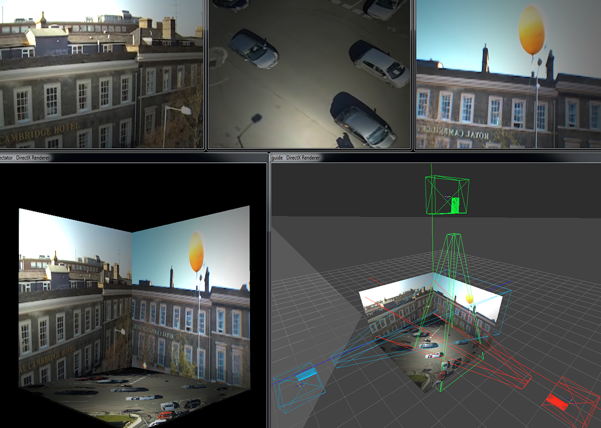

Video
Cinematic Architecture
Mapping
Projection
3D
CAD
Visualisation
Point Cloud
Photogrammetry
Chronophotography
Auto-Poesies
Gesture
VVVV
Archigeture
Research
Theory
Design
Parametric figuration
Generative geometry
Prototype
Fabrication
vacant.tv
experimental projects in multi-dimensions
Publication
Paper Pop-up Projection, Node17 Workshop, Frankfurt
Events
Space
.
Visualisation
Parametric
Projects
Body
Design
.
.
.
.
.
.
.
.
Web design adapted from great work of deleloper Andy Barefoot, UK